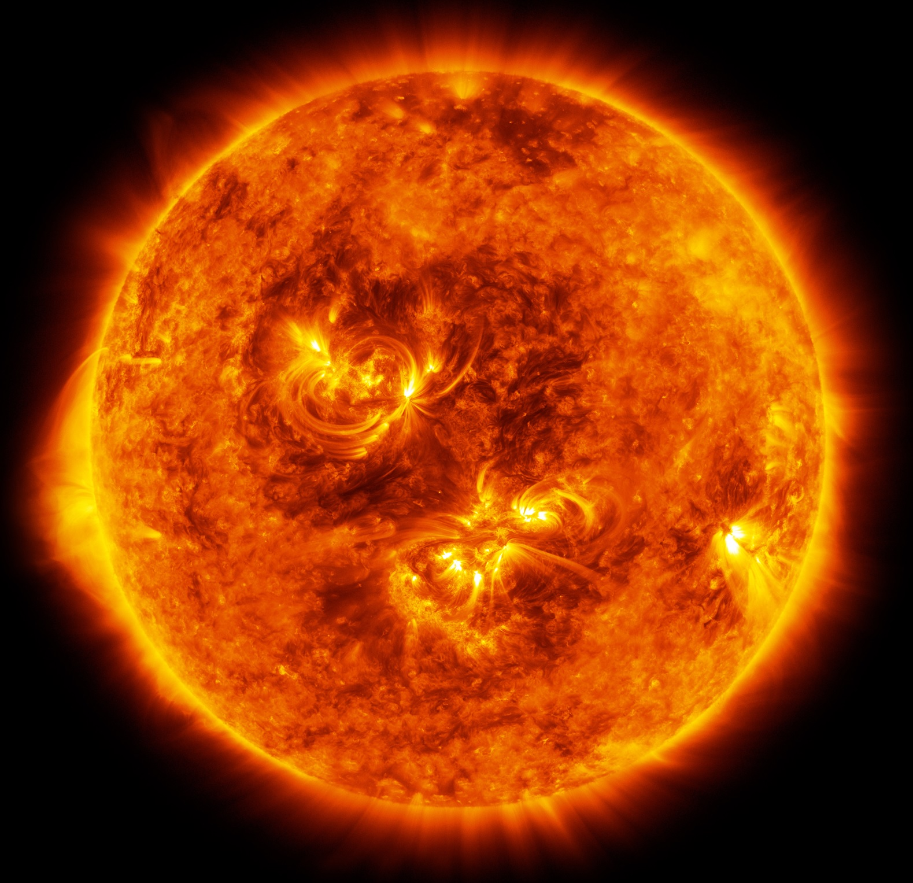
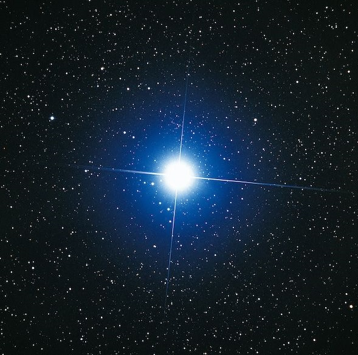
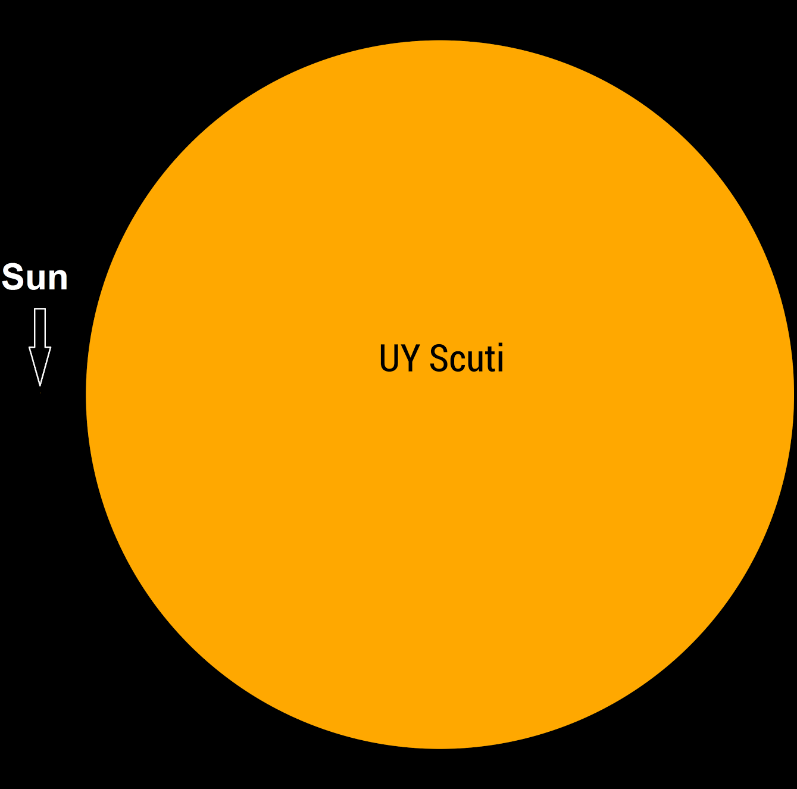
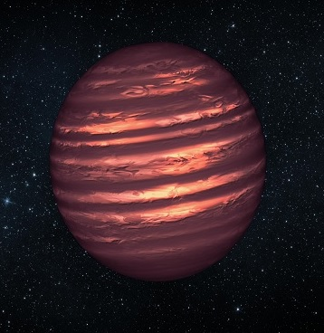
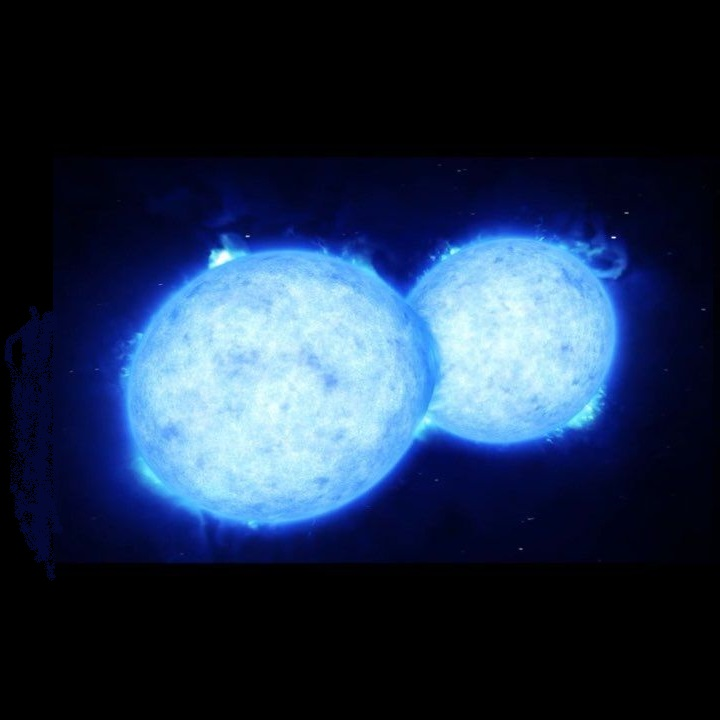
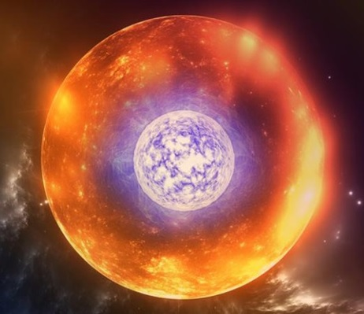

A star is an astronomical object comprising a luminous spheroid of plasma held together by self-gravity. The nearest star to Earth is the Sun. Many other stars are visible to the naked eye at night, but their immense distances from Earth make them appear as fixed points of light.
The Sun is the star at the center of the Solar System. It is a nearly perfect ball of hot plasma,[18][19] heated to incandescence by nuclear fusion reactions in its core. The Sun radiates this energy mainly as light, ultraviolet, and infrared radiation, and is the most important source of energy for life on Earth. The Sun's radius is about 695,000 kilometers (432,000 miles), or 109 times that of Earth. Its mass is about 330,000 times that of Earth, comprising about 99.86% of the total mass of the Solar System.[20] Roughly three-quarters of the Sun's mass consists of hydrogen (~73%); the rest is mostly helium (~25%), with much smaller quantities of heavier elements, including oxygen, carbon, neon, and iron.
HD 140283 (also known as the Methuselah star)[9][10] is a metal-poor subgiant star about 190 light years away[11] from the Earth in the constellation Libra, near the boundary with Ophiuchus in the Milky Way Galaxy. Its apparent magnitude is 7.205, so it can be seen with binoculars. It is one of the oldest stars known.[6] The star's light is somewhat blueshifted as it is moving toward rather than away from the Earth and it has been known to astronomers for over a century as a high-velocity star based on its other vectors (proper motion). An early spectroscopic analysis by Joseph W. Chamberlain and Lawrence Aller revealed it to have a substantially lower metal content than the Sun.[12] Modern spectroscopic analyses find an iron content about a factor of 250 lower than that of the Sun. It is one of the closest metal-poor (Population II) stars to Earth.
UY Scuti (BD-12°5055) is an extreme red hypergiant[3] or red supergiant star in the constellation Scutum. It is considered one of the largest known stars by radius and is also a pulsating variable star, with a maximum brightness of magnitude 8.29 and a minimum of magnitude 10.56. It has an estimated radius of 1,708 solar radii (1.188×109 kilometres; 7.94 astronomical units), thus a volume nearly 5 billion times that of the Sun. It is approximately 2.9 kiloparsecs (9,500 light-years) from Earth. If placed at the center of the Solar System, its photosphere would at least engulf the orbit of Jupiter.
EBLM J0555-57 is a triple star system approximately 670 light-years from Earth. EBLM J0555-57Ab, the smallest star in the system, orbits its primary star with a period of 7.8 days, and at the time of discovery, was the smallest known star with a mass sufficient to enable the fusion of hydrogen in its core.
VFTS 352 is a contact binary star system 160,000 light-years (49,000 pc) away in the Tarantula Nebula, which is part of the Large Magellanic Cloud.[5] It is the most massive and earliest spectral type overcontact system known.[4] The discovery of this O-type binary star system made use of the European Southern Observatory's Very Large Telescope,[6] and the description was published on 13 October 2015.[4] VFTS 352 is composed of two very hot (40,000 °C), bright and massive stars of equal size that orbit each other in little more than a day. The stars are so close that their atmospheres overlap.[6] Both stars are rotating at a rate equal to their orbital period; that is, they are tidally locked.[7] Extreme stars like the two components of VFTS 352 are thought to be the main producers of elements such as oxygen.[6] The future of VFTS 352 is uncertain, and there are two possible scenarios. If the two stars merge, a very rapidly rotating star will be produced. If it keeps spinning rapidly it might end its life in a long-duration gamma-ray burst. In a second hypothetical scenario, the components would end their lives in supernova explosions, forming a close binary black hole system, hence a potential gravitational wave source through black hole–black hole merger.
HV 2112 is a cool luminous variable star in the Small Magellanic Cloud. Until 2018, it was considered to be the most likely candidate for a Thorne–Żytkow object, but it is now thought to be an asymptotic giant branch star. HV 2112 was first reported as a variable star in 1908, by Henrietta Leavitt. At the time it was identified as Harvard no. 2112. No period was given, but it was reported to be "probably long". The magnitude range was given as 13.7 to fainter than 16.5, from photographic plates.[12] In 1966, analysis of Magellanic Cloud variable stars showed that HV 2112 had a photographic magnitude range from 13.0 to below 17.8. It was classified as a long-period variable, now known as a Mira variable, on the basis of its large amplitude and reasonably regular light variations.
